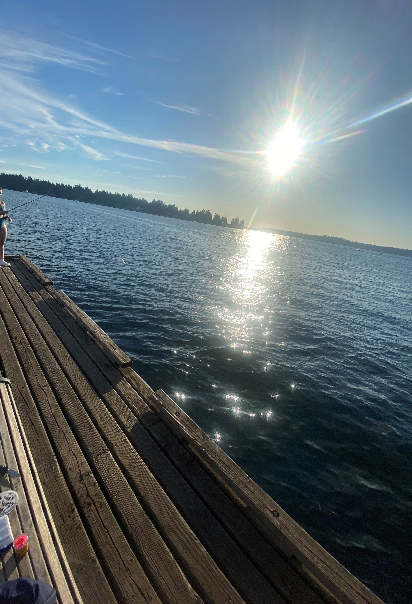
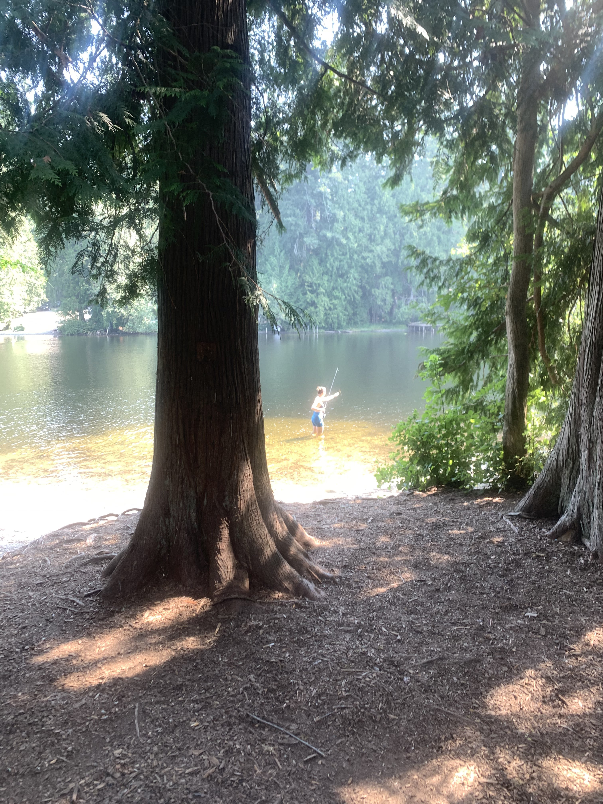
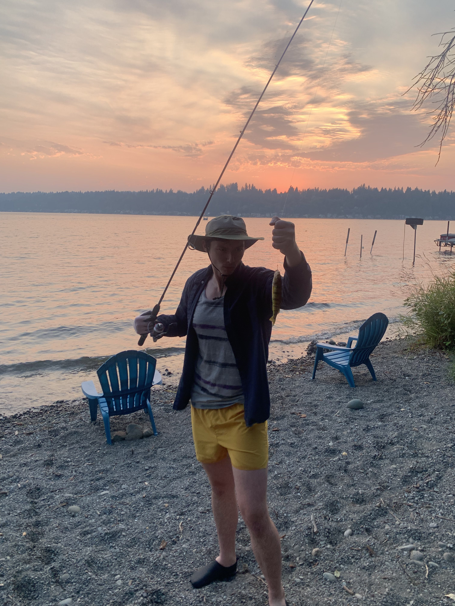

August 16, 2023 üêüü¶à
Location: Lake Sammamish
Fish Caught: 0 trout, 0 other
Weather: 90F - Sunny and calm
Bait Used: Worms
Purchased a rod, reel, line, bobbers, live worms, hooks, powerbait and some synthetic bait at big 5. Wasn't really sure what I was doing. Reel
got jumpled so bad I had to cut it twice. Got a few meidum sized fish to eat the nightcrawlers off my tackle, but no hooks.
August 17, 2023 üé£

Location: Yarrow Point Beach Park
Fish Caught: 0 panfish
Weather: 89F - Sunny and warm
Bait Used: Worms
Today, I decided to visit Yarrow Point Beach Park to try my luck at catching perch. The weather was a lovely 89 degrees, and the sun was shining brightly. I brought along a new pole and rod setup, adding another option to my fishing arsenal. It's always exciting to have multiple setups ready for action!
As I cast my line into the calm waters, I learned that perch are considered a type of "panfish," which means they're just the right size to fit inside a pan for cooking. Although I didn't manage to catch any fish today, I did feel multiple nibbles and bites from the smaller inhabitants of the lake.
Even though the catch count remained at zero, I still enjoyed the serene surroundings and the thrill of feeling the fish interact with my bait. I'm determined to refine my techniques and hopefully have a successful perch catch next time!
August 24, 2023 üé£

Location: Puget Sound - Everett Marina down to Edmonds
Fish Caught: Rockfish 1 Flounder 1 Salmon 7
Weather: 82F - Sunny and warm
Bait Used: Flasher, spinner, lure, downrigger, large boat
Went out with my Father, brock, on his Boston Whaler fishing boat. We caught slamon in the salt water about 300 feet off the coast of the rundown port in endmond. This day, we say
porpuse, lots of salmon jumping, and fed the harbor seals.
August 24, 2023 üé£

Location: Lake Sammaish State Park, Beaver Lake, and Pine Lake
Fish Caught: 0
Weather: 82F - Sunny and warm
Bait Used: Artifical Worms
Liza and I tried to fish multiple lakes during the hot part of the day. No bites at all :( Met a nice fisher on a small water vessel named a Fish Cat. He recommended beaver lake for trout after they
stock it in October. Pine lake and beaver lake were not great for shore fishing, at least at the public access.
August 27, 2023 üé£

Location: Lake Sammaish Private Beach
Fish Caught: 1 Perch 1 Pumpkinseed
Weather: 80F - Sunny and smokey
Bait Used: Real Worms
Finally! After many days of fishing for panfish, I finally caught multiple! I got both a perch and a sunfish about 15 feet off the shore on the eastside of Lake Sammamish.
Using a bobber, sinker and worm as well as just a worm on a hook. Time was 6:30-8:30 PM right through the sunset